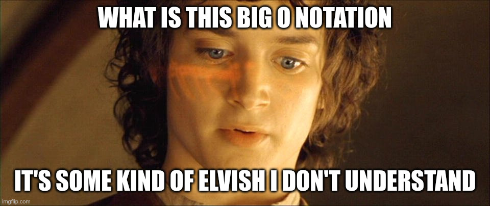
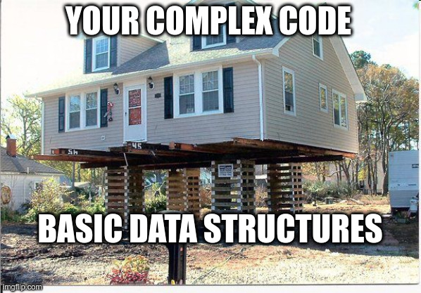
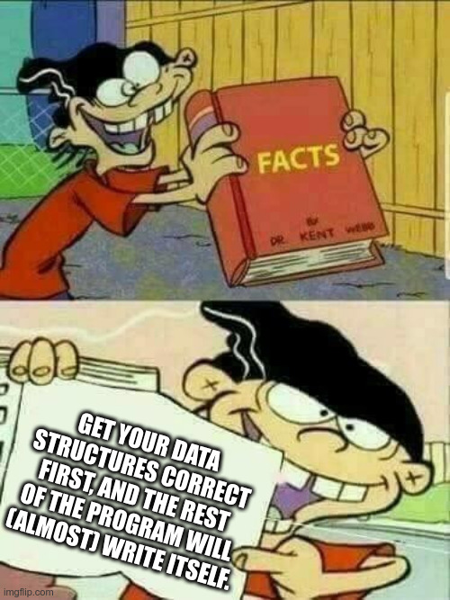

Main learning outcomes for this class
- Big O Notation:
- I understand the basic meaning of Big O Notation
- I know how to estimate the complexity of simple programs and how to use it to estimate if my program will not obtain time limit exceeded when submitted
- Fundamental Data Structures:
- I know the concept of stacks, queues and deques and how to use them on my programming language
- I know the concept of sets (set and multiset) and how to use them on my programming language
- I know the concept of maps/dictionaries (map and multimap) and how to use them on my programming language
- I know the concept of priority queues (priority_queue) and how to use them on my programming language
- I understand the concept of ordered data structures and how to traverse them using iterators
- I know that there are non ordered data structures for the fundamental data structures (ex: unordered_set and unordered_map)
- Fast I/O:
- I understand that some problems might require a lot of input and/or output and therefore need efficient I/O primitives
- I know how to perform fast IO on my preferred language
Study Material
- Big O Notation
- Programming Language References
- Fundamental Data Structures:
- Fast I/O:
I want my memes!
😁 big O notation

😁 the role of containers...

😁 data structures!

Pedro Ribeiro - DCC/FCUP | Last update: